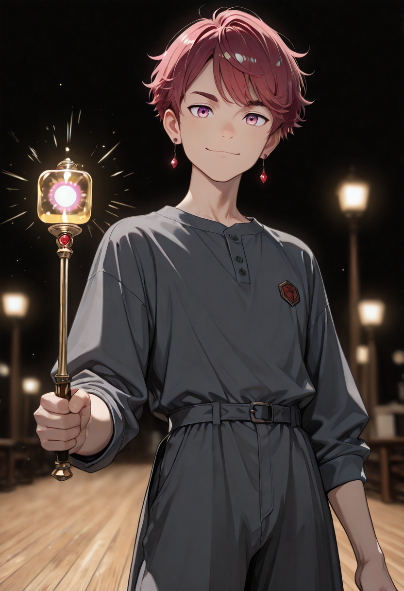

The Bright Side of the Equation
The Light Mage has resolved the contradiction that the Corrupted version still carries as tension. Light does not require corruption to cause harm , it requires focus, scale, and the willingness to direct it without flinching. The Light Mage has all three. She is not corrupted. She is simply very good at something that happens to burn.
The transition from Corrupted Light Mage to Light Mage is a process of integration rather than purification. The corruption is still present , it simply no longer registers as grief. The mage has metabolized the guilt of wielding light as a weapon and arrived at something that could almost be called peace with it.
She projects radiance that her teammates squint in. She apologizes for this, occasionally, when she remembers. She is the only Araldi unit that other units complain about during camp , not about her character, but about sleeping in proximity to someone who never fully switches off.
Tactical Data
Solar Ray
BaseLight Barrier
ActiveLuminescence
PassiveGallery